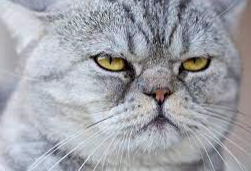

Suky

Suky es una gatita regalona con un pelaje suave y brillante de color atrigrada en tonos cafes. Es una gatita muy juguetona y amorosa que siempre está llena de energía y alegría.
Ver másGrunon
Gruñon es un gatito cachorro con un pelaje hermoso y distintivo, suave y brillante en tonos de blanco y cafe. Es muy activo y le encanta explorar, disfruta de momentos de relajación."
Ver másNegro

Negro es grande con un pelaje suave en color negro azabache. Es un gato juguetón y cariñoso que siempre tiene energía. Es ideal para actividades físicas como jugar en el parque.
Ver más